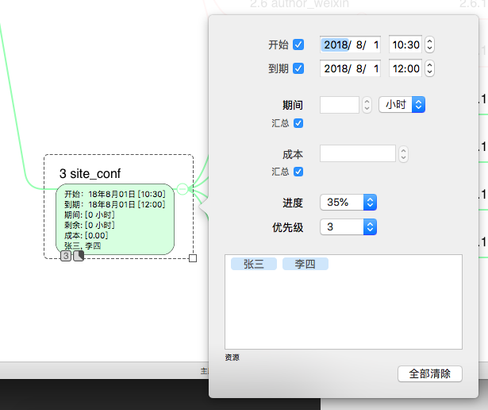

无论是在工作还是在生活中，思维导图都是梳理杂乱思绪的必备工具。对于我来说，它甚至是解救我于纷繁芜杂的唯一救世主。MindNode和XMind都是目前流行的思维导图制作工具。至少在我的周围是这样。无论是我的朋友，同事，还是第一次接触的客户公司的对接人员，只要一画思维导图肯定逃不出这两个工具。你们一定对都对它们特别了解啦，所以今天我想聊的是另一款MAC上的顶级思维导图软件——IThoughtsX。
它的官网是https://www.toketaware.com。OSX版和IOS版可以在AppStore上购买，价格是328元。一次买断。我当时是趁着优惠时买的，现在想来真是捡了个天大的便宜，我画思维导图的习惯正是通过这款软件培养起来的。近期它同时增加了WINDOWS版。
小巧、基础功能齐备
它的体积只有30多M。相比同类APP100M+的体积来说已经算很小巧了。做为思维导图该有的功能它都有，并且颜值也不差。主题、子主题、主题和链接线样式、排序、自动插入序号、插入图片、标注、联系、边框、备注等等等等一应俱全。直接看图吧，这是我当初规划数据库时做的小例子。
支持多种样式并且可以保存自定义样式。
可以导出为多种样式，并且支持其它主流的思维导图格式。
任务管理与幻灯片
可以对每个节点设置任务，起到展示作用。虽然用处不是很大，但是了胜于无。它的任务面板是这样的：

只有简单的时间、成本、进度、优先级、资源显示，十分基础，但也能标识出一个任务的基本要素了。勾选汇总后，在父级节点中可以得到所有子任务的汇总信息。
另一个了胜于无的功能是幻灯片。可以选择一个节点添加到幻灯片中（子节点也会被自动加入）。在放映时就会按添加的顺序依此放映。幻灯片支持导出，这里OSX版和WINDOWS版略有不同。前者是把每页都导出到一个PDF中，后者是导出到PPT中。下面以WINDOWS版为例展示一下该功能：
总的来说，IThoughtsX是非常不错的思维导图制作工具。界面友好使用方便。任务展示和幻灯片功能是否实用，就仁者见仁智者见智了。不过有总比没有强，对吧？如果忽略价格的话，至少在我心中它是NO.1。不过这价格可以一次买断，如果工作生活中需要重度使用思维导图的话，不妨尝试下吧。